Temple of the Cult of the Jackal¶
Concealed in a wide, flat hollow, high in the hills, lies this obscure structure. It’s neither large, nor imposing. It’s not designed to intimidate by hulking on the edge of a steep hill, and providing a commanding view of a valley. It’s nestled deep in the hills, designed to remain as a secure, hidden retreat, surrounded by higher peaks.
Note
Jackals are not part of this continent’s wildlife.
Somewhere on the continent to the North, there’s a place with a Jackal-headed god, who looks like the Egyptian Anubis.
People who are casually aware of the cult often substitute “wolf” for “jackal” because that’s an animal they know. Traders and travelers in the western continent may use “coyote”, because it makes them sound more worldly.
The true followers never make a mistake. To them, the term “jackal” becomes a kind of passcode; something outsiders wouldn’t know.
The temple’s valley is a bit less than a kilometer long in the E-W direction. A number of little streams in rocky channels converge in a pond, and drop over a fall to a lower, narrower valley. In the N-S direction, it’s a bit less than a half-kilometer wide.
The location of the Temple is a closely-guarded secret. Pilgrims need directions, and must contact one of the spies in Eagles to get directions and the password.
The most effective entry is to get captured by the bandit army and dragged up here.
General¶
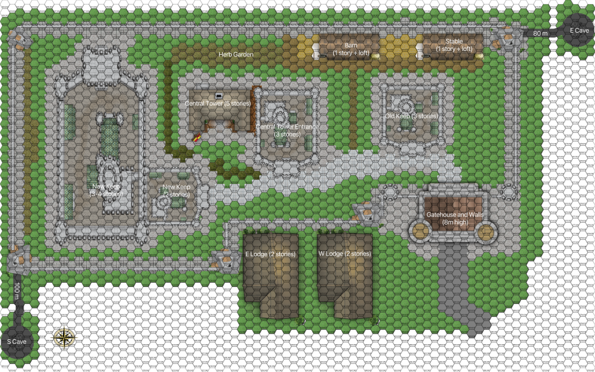
Temple Grounds¶
Scale: Hex = 2m (6’).
The structure is just under 140 m along the north-facing wall. The western wall is 60 m long. The eastern wall is 40 m long. The southern wall has two turns in it: walking the top is 162 m. The total circuit, marched by the guards is a hair over 400m.
GM Note
Given a typical character’s Move value of 10m/r, it’s possible for an officer to hustle around the wall in about four minutes. Since there’s no reason to hurry, a typical circuit takes about 12-16 minutes, with long pauses at each tower to stare into the distance.
As a general guideline – if a character makes a simple Acumen-related observation skill roll – use 4D minutes as the time for a circuit by a guard.
There are a few obvious structures that comprise the larger temple structure.
Wall. The compound wall is crenelated, only 8-10m high, with five small towers in the corners. The visible force is about 30 men. The towers are 10m high.
The rumor about other-worldly goblins patrolling the forest around the keep after nightfall is true.
Gate House. The Gate House is 8-9m high, with a flat roof, and crenelation, allowing armed archers to shoot down into the road. It has a double door, which open during the day. The front has archer slits that house some guards with cross-bows, plus the keeper of the gate. Inside the gatehouse are spiral stairs leading to the roof.
A concealed door (difficulty Easy 8, to discover because it’s heavily used) reveals stairs descending into a small basement.
Pilgrims are admitted with a little discussion beyond some secret phrases or gestures.
Hirelings and merchants with supplies must present paperwork to be granted access to the temple.
The New Keep. The New Keep is the cult’s nerve center. It houses the human guards, as well as his planning staff and intelligence gatherers. It has the main dungeons, as well as some magical equipment for spying out the doings in various cities.
The Central Tower. The Central Tower is the Temple of the Jackal. Religious ceremonies and magical procedures are performed here. The central nave is open for five stories, and occasionally has birds and what-not flying around.
The forest is ancient, and does have trees taller than this tower. From the cleared road, and the surrounding hills, the tower is prominent because it erupts out of a large clearing.
The Old Keep. The Old Keep is an ancient building with old-style haphazard stone work. It has been added-to and extended over the centuries.
While it once was the main building, it is now the private residence of Xorn and his main henchmen.
Barn and Stables. Up against the north wall are two small wooden structures. They have the usual features of barns and stables: horses, manure, farming tools, hay.
Outside the barn is a 30m × 4m garden plot with some herbs and vegetables.
The Lodges. There are two outside lodges for Pilgrims: called the East Lodge and the West Lodge. These are 14m by 20m buildings. They’re two stories above ground, with exposed foundations suggesting a basement. (They’re not like common rural farmhouses built over the animal pen.)
Less obvious are two caves. The East Cave and South Cave are snuggled in deep, dry ravines, hidden by piles of boulders. With some careful searching (difficulty Moderate 14) the caves can be found. The ravines in which the caves are concealed are suspiciously dry; the water flows down a gulley not far away. The caves are inhabited by a horde of otherworldy goblins.
It’s not clear precisely how a horde of goblins were pulled into this realm, or for what purpose. It’s not even clear when they might have arrived; they may be marooned here.
Schedules¶
There’s a typical daily schedule that applies to most days. There is some variation, shown in the Activity Details table.
Forenoon (8AM to Noon) |
|
Afternoon (noon to 4PM) |
|
Evening (4PM to 8PM) |
|
Dog (8PM to midnight) |
|
Night (midnight to 4AM) |
|
Morning (4AM to 8AM) |
|
The nighttime Goblin raiding stays outside the Keep’s valley, making it a difficult activity to observe from the Pilgrim lodges or anyplace else near the Keep.
The activities vary from day to day. There doesn’t seem to be any pattern.
Activity Details
Roll 1D to pick the day’s activities.
Roll |
Activity |
Location |
1 |
Religious Worship Services |
Central Tower |
2 |
Xorn’s public audiences, court, witness punishment |
Old Keep |
3 |
Pilgrim training time |
Central Tower |
4 |
A few bandit patrols leave forenoon, return before evening |
Outdoors |
5 |
The whole bandit army erupts forenoon, returns before evening with loot |
Outdoors |
6 |
Maintenance and cleanup indoors |
Roll:
|
Characters¶
There are three distinct forces within the Temple.
The Cult of the Jackal. This is a force composed of clerics, novices, and pilgrims. This group is the base for the externally focused intelligence operation in City of Eagles and City of White Water.
The Bandit Army with mages and various thugs and criminals.
There is also a horde of Goblins that sometimes infests the temple valley.
The Cult of the Jackal is the religious arm.
Xorn¶
See Xorn in the Central Characters chapter.
Residence: Central Tower Fourth Level and Central Tower Fifth Level.
Cult of the Jackal¶
The organization has two divisions, internal and external.
Internal Security. These priests are in charge of scrying and torture. There are devices in the top of the New Keep that are used to discern caravan movements along the road, and direct the bandit army to intercept them.
The head of this organization the Senior Priest – Internal (budget 22D + 13D).
Office: New Keep Ground Level, Room 9. More commonly, however, they’re found in the New Keep Fourth Level, rooms 1 and 2.
Residence: Old Keep, Level 3, Room 2.
There are direct reports to the Senior Priest of Internal Security: a priest and a magician.
High Priest – Torturer
Office: Old Keep Second Level, Room 2.
Residence: Old Keep Third Level, Room 5.
High Mage – Scrying
Office: Old Keep Second Level, Room 2
Residence: Old Keep Third Level, Room 6
External Intelligence. These priests are in charge of communications, spies and disinformation. This organization is in contact with agents in City of Eagles and City of White Water.
The head of this organization is a Senior Priest External (budget 18D + 10D).
Office: New Keep Ground Level, Room 7.
Residence: Old Keep Third Level, Room 4.
The organization has two High Priests within the temple, writing and reading correspondence, and handling external operations, including finance and payroll for hirelings. There are two more High Priests operating in the field.
Level 2-3 High Priest – Communications
Office: New Keep Ground Level, Room 7.
Residence: Old Keep Third Level, Room 7. Hot-bunking with Operations. Really, quite awkward.
Level 2-3 High Priest – Operations
Office: New Keep Ground Level, Room 7.
Residence: Old Keep Third Level, Room 7. Hot-bunking with Communications. Not happy with this.
Level 2-3 High Priest.
Deployed in City of Eagles. His cover is to represent some vague ‘investors’ from Southlands looking for trade opportunities: call him ‘Steward’.
Two henchmen:
Boss at The Oaks riding Stable.
Bartender from The Fox’s Tail.
See The Exchange for details on the spymaster in City of Eagles.
Level 2-3 High Priest.
Deployed in City of White Water at a fat rendering plant out of town. Makes and sells candles from a shop in town.
See Finish the Deal for details on the spymaster in City of White Water.
The two Senior priests and the five High Priests all have similar descriptions:
Jackal Senior Priest – Internal: Agility 4D, fighting 1D+1, melee combat 1D, Coordination 4D, Physique 4D, Intellect 3D+2, reading/writing 1D, speaking 1D+1, Acumen 3D+2, Charisma 3D+2, intimidation 4D+2. Disadvantages: Infamy (R2), Known to be cruel; Devotion (R1), Great Priest Xorn; Employed (R2), By Xorn, wherever he is; Quirk (R2), Cruel, Special Abilities: Natural Hand-to-Hand Weapon (R2), Martial arts skills: 1D+2 bare-hand attack; Natural Armor (R2), Martial Block, Move: 10, Strength Damage: 2D, Fate Points: 1, Character Points: 5, Body Points: 22.
Jackal Senior Priest – External: Agility 3D, fighting 1D, melee combat 1D, Coordination 3D, Physique 3D, Intellect 3D, reading/writing 2D, speaking 1D, Acumen 3D, Charisma 3D, intimidation 3D. Disadvantages: Devotion (R1), Great Priest Xorn; Employed (R2), By Xorn, wherever he is; Quirk (R1), Officious, Special Abilities: Natural Hand-to-Hand Weapon (R2), Martial arts skills: 1D+2 bare-hand attack; Natural Armor (R2), Martial Block, Move: 10.0, Strength Damage: 2D, Fate Points: 1, Character Points: 5, Body Points: 22.
Jackal Intelligence – Torturer: Agility 4D, fighting +1, Coordination 4D, Physique 4D, Intellect 4D, devices 1D, Acumen 3D+2, artist 1D, investigation 1D, know-how 1D, Charisma 3D+2, intimidation 5D+1. Disadvantages: Devotion (R3), Cult of Jackal; Employed (R3), Jackal Temple; Quirk (R3), Brutally cruel, Special Abilities: Natural Hand-to-Hand Weapon (R2), Brutal punch, Move: 10, Strength Damage: 2D, Fate Points: 1, Character Points: 5, Body Points: 24.
Jackal Intelligence – Scrying: Agility 4D, fighting 1D, Coordination 4D, Physique 4D, stamina 4D, Intellect 4D, navigation 1D, speaking 1D, trading 1D, traps 1D, Acumen 3D+2, disguise 1D, hide 1D, investigation 1D, search 1D, streetwise 1D, Charisma 3D+2, intimidation 5D+1, Extranormal 3D, divination 2D. Disadvantages: Devotion (R3), Cult of Jackal; Employed (R3), Jackal Temple; Quirk (R3), Insufferable if insulted, Move: 10, Strength Damage: 2D, Fate Points: 1, Character Points: 5, Body Points: 24.
Jackal Intelligence – Guard: Agility 4D, fighting +2, melee combat +2, Coordination 4D, Physique 4D, stamina +1, Intellect 3D+2, Acumen 3D+2, Charisma 3D+2, intimidation 4D. Move: 10, Strength Damage: 2D, Fate Points: 1, Character Points: 5, Body Points: 22.
Jackal Intelligence – Communications: Agility 4D, fighting 1D, Coordination 4D, Physique 4D, Intellect 4D, Acumen 3D+2, Charisma 3D+2, intimidation 3D+1. Disadvantages: Devotion (R3), Cult of Jackal; Employed (R3), Jackal Temple; Quirk (R3), Insufferable if insulted, Move: 10, Strength Damage: 2D, Fate Points: 1, Character Points: 5, Body Points: 20, Equipment: Hardened Leather Armor 1D+1; Mace 1D+1.
Jackal Intelligence – Field Operations: Agility 4D, fighting 1D, melee combat +2, Coordination 4D, Physique 4D, Intellect 4D, devices 1D, healing 1D, navigation 1D, reading/writing 1D, traps 1D, Acumen 3D+2, disguise 1D, hide 1D, investigation 1D, know-how 1D, search 1D, streetwise 1D, Charisma 3D+2, intimidation 3D+1, Extranormal 2D. Disadvantages: Devotion (R3), Cult of Jackal; Employed (R3), Jackal Temple; Quirk (R3), Greedy, stealing from Jackal loyalists, Special Abilities: Natural Hand-to-Hand Weapon (R2), Brutal punch, Move: 10, Strength Damage: 2D, Fate Points: 1, Character Points: 5, Body Points: 20, Equipment: Dagger 1D; Hardened Leather Armor 1D+1, Description: Ready Spells: Shield, Freeze, Immediate Hurt,.
Staff Positions¶
There 1D priests with various lower-level roles.
There are 2D novices, aspiring to be priests.
There may be as many as 3D pilgrims hanging around, hoping to become novices, or maybe just taking in the glory before they scatter to their villages and towns.
Devoted Xorn Priests: Agility 4D, fighting 1D, melee combat +2, Coordination 4D, Physique 3D+2, Intellect 3D+2, Acumen 3D+2, Charisma 3D+2, intimidation 3D+1. Disadvantages: Devotion (R1), Great Priest Xorn; Employed (R2), Following Xorn, Special Abilities: Natural Hand-to-Hand Weapon (R2), Martial arts skills: 1D+2 bare-hand attack; Natural Armor (R2), Martial Block, Move: 10.0, Strength Damage: 2D, Fate Points: 1, Character Points: 5, Body Points: 22.
Devoted Xorn Novices: Agility 3D, fighting 1D, Coordination 3D, Physique 3D, stamina 1D, Intellect 3D, Acumen 3D, Charisma 3D. Disadvantages: Devotion (R1), Great Priest Xorn; Employed (R2), Following Xorn, Special Abilities: Natural Hand-to-Hand Weapon (R1), Martial arts skills: 1D bare-hand attack; Natural Armor (R1), Martial Block, Move: 10.0, Strength Damage: 2D, Fate Points: 1, Character Points: 5, Body Points: 22.
Temple of the Jackal Pilgrims: Agility 2D+2, fighting +2, Coordination 2D+2, Physique 2D+2, Intellect 2D+2, Acumen 2D+2, Charisma 2D+2, intimidation 1D. Move: 10.0, Strength Damage: 1D, Fate Points: 1, Character Points: 5, Body Points: 22.
Bandit Army¶
The Bandit army’s base is the Jackal’s Temple. However, their field of operations is throughout the eastern edge of Hillshire and the western edge of Southlands. See Temple of the Cult of the Jackal.
The bandit army is – well – bandits. There is little coordination among the forces. They use looted armor and weapons. They steal ideas from the goblins that live in the caves near the temple.
It is bloody chaos.
The organization is as follows:
General
During the day, found in the field, raiding.
Residence: New Keep, Level 2, rooms 10, 12, 14.
Colonel
During the day, found in the field, raiding.
Residence: New Keep, Level 2, Rooms 14, 17, 18.
High Mage
During the day, found in the field, raiding.
Staffing Admin. Major
Office: New Keep, Level 1, Room 3
Residence: New Keep, Level 2, Rooms 8, 11, 13, 16
Finance Admin. Major
Office: New Keep, Level 1, Room 6
Residence: New Keep, Level 2, Rooms 8, 11, 13, 16
Finance Admin. Clerk
Office: New Keep, Level 1, Room 13
Residence: In barracks
Staffing Admin. Clerk
Office: New Keep, Level 1, Room 16
Residence: In barracks
The rest of the army is a rabble of thugs and criminals, numbering somewhere around 30.
Bandit Army General (Knight): Agility 4D, fighting 1D, riding 1D, melee combat 1D, Coordination 4D, Physique 4D, stamina 1D, Intellect 3D+2, speaking 1D, healing 1D, Acumen 3D+2, survival 1D, tracking 1D, investigation 1D, gambling 1D, Charisma 3D+2, intimidation 4D+2. Disadvantages: Devotion (R2), Cult of the Jackal; Employed (R2), Cult of the Jackal; Quirk (R2), Exercie Nut, Move: 10.0, Strength Damage: 2D, Fate Points: 1, Character Points: 5, Body Points: 26.
Bandit Army Colonel (Squire): Agility 4D, fighting 1D, melee combat +2, Coordination 4D, Physique 4D, stamina 1D+1, Intellect 3D+2, Acumen 3D+2, gambling 1D, hide 1D, survival 1D, tracking 1D, Charisma 3D+2, intimidation 4D+2. Disadvantages: Devotion (R2), Cult of the Jackal; Employed (R2), Cult of the Jackal; Hindrance (R3), Thinks he’s invincible; Quirk (R2), Ruthless political climber, Move: 10, Strength Damage: 2D, Fate Points: 1, Character Points: 5, Body Points: 28.
Bandit Army High Mage: Agility 4D, fighting +2, melee combat +2, Coordination 4D, Physique 4D, stamina 1D+1, Intellect 3D+2, reading/writing 1D, Acumen 3D+2, gambling 1D, know-how 1D, Charisma 3D+2, intimidation 4D+2, Extranormal 3D. Disadvantages: Devotion (R2), Cult of the Jackal; Employed (R2), Cult of the Jackal; Quirk (R2), Loves the idea of a fight, not the fighting, Move: 10.0, Strength Damage: 2D, Fate Points: 1, Character Points: 5, Body Points: 20.
Bandit Army Mage: Agility 4D, fighting +2, Coordination 4D, Physique 3D+2, Intellect 3D+2, Acumen 3D+2, Charisma 3D+2, intimidation 4D, Extranormal 2D. Disadvantages: Devotion (R2), Cult of the Jackal; Employed (R2), Cult of the Jackal; Quirk (R2), Back-stabbing little shitweasel, Move: 10.0, Strength Damage: 2D, Fate Points: 1, Character Points: 5, Body Points: 20.
Bandit Army – Guard, Thug, etc.: Agility 4D, fighting +2, melee combat +2, Coordination 3D, Physique 3D, Intellect 3D, Acumen 3D, Charisma 2D. Disadvantages: Devotion (R3), Cult of Jackal; Employed (R3), Jackal Temple; Quirk (R2), Hopes to becomes an agent, Special Abilities: Natural Hand-to-Hand Weapon (R1D), Brutal punch, Move: 10.0, Strength Damage: 2D, Fate Points: 1, Character Points: 5, Body Points: 24.
Bandit Army Mage Spells¶
War Blast¶
- Skill:
fire-based
- Difficulty:
8
- Effect:
12 (fire-based 2*D (ignore all armor))
- Range:
20 m (7)
- Speed:
(7)
- Duration:
1 sec (0)
- Casting Time:
1 round (4)
- Other Aspects:
incantation (4): Demon Blast (litany)
concentration (2): Concentration: 1 round (willpower/mettle roll 8)
War Bolt¶
- Skill:
earth-based
- Difficulty:
7
- Effect:
9 (earth-based 3*D)
- Range:
20 m (7)
- Speed:
(7)
- Duration:
1 sec (0)
- Casting Time:
1 round (4)
- Other Aspects:
incantation (4): War Blast (litany)
concentration (2): Concentration: 1 round (willpower/mettle roll 8)
Battle Shield¶
- Skill:
A wall of fire-like shimmer
- Difficulty:
14
- Effect:
9 (A wall of fire-like shimmer 2*D (protection modifier))
- Range:
8 m (5)
- Speed:
(5)
- Duration:
1 min (9)
- Casting Time:
1 round (4)
- Other Aspects:
area_effect (10): 2m radius sphere
incantation (4): Demon Shield Chant (litany)
concentration (2): Concentration: 1 round (willpower/mettle roll 8)
Demonic Cleansing¶
- Skill:
Boost Charisma/intimidation break concentration
- Difficulty:
14
- Effect:
12 (Boost Charisma/intimidation break concentration 4*D)
- Range:
8 m (5)
- Speed:
(5)
- Duration:
2 round (5)
- Casting Time:
1 round (4)
- Other Aspects:
area_effect (10): 2m radius sphere
incantation (4): Mage Intimidation Chant (litany)
concentration (2): Concentration: 1 round (willpower/mettle roll 8)
Demonic Inspiration¶
- Skill:
Boost combat skill
- Difficulty:
16
- Effect:
12 (Boost combat skill 4*D)
- Range:
8 m (5)
- Speed:
(5)
- Duration:
2 min (10)
- Casting Time:
1 round (4)
- Other Aspects:
area_effect (10): 2m radius sphere
incantation (4): Mage Inspiration Chant (litany)
concentration (2): Concentration: 1 round (willpower/mettle roll 8)
Goblin Hordes¶
Great Leader. (Attributes: 20D, skills 11D, options 2D.)
Officers. (Attributes: 18D, skills 9D, options 2D.)
Guards and Foragers. (Attributes: 16D, skills 7D, options 2D.)
Goblin Great Leader: Agility 3D+2, acrobatics +2, dodge +2, fighting 1D+1, melee combat 1D+1, stealth +1, Coordination 3D+1, throwing +1, Physique 4D, running +2, stamina 1D, Intellect 3D, healing 1D, Acumen 3D, crafting +2, survival 1D, Charisma 3D, command 1D, intimidation 1D. Advantages: Equipment (R2), Weapon or survival gear unknown to humans, Disadvantages: Cultural Unfamiliarity (R2), Lost in human company, Special Abilities: Combat Sense (R2), Surprise reduced by 4, Move: 10, Strength Damage: 2D, Fate Points: 1, Character Points: 5, Body Points: 31, Equipment: bone and hide armor +1D; buckler +2; sword +1D+2.
Goblin Officer: Agility 3D+2, acrobatics +2, dodge +2, fighting +2, melee combat 1D+1, stealth +2, Coordination 3D, throwing +1, Physique 3D+1, running +2, stamina +2, Intellect 3D, healing +2, Acumen 3D, crafting +2, survival +2, Charisma 2D, command +2, intimidation +2. Advantages: Equipment (R2), Weapon or survival gear unknown to humans, Disadvantages: Cultural Unfamiliarity (R2), Lost in human company, Special Abilities: Combat Sense (R2), Surprise reduced by 4, Move: 10, Strength Damage: 2D, Fate Points: 1, Character Points: 5, Body Points: 31, Equipment: bone and hide armor +1D; buckler +1; sword +1D.
Goblin Forager: Agility 3D, acrobatics +2, dodge +1, fighting +2, melee combat +2, stealth +1, Coordination 3D, throwing +1, Physique 3D, running +2, stamina +2, Intellect 3D, healing +1, Acumen 2D, tracking 1D, survival +2, Charisma 2D, command +1, intimidation +2. Advantages: Equipment (R2), Weapon or survival gear unknown to humans, Disadvantages: Cultural Unfamiliarity (R2), Lost in human company, Special Abilities: Combat Sense (R2), Surprise reduced by 4, Move: 10, Strength Damage: 2D, Fate Points: 1, Character Points: 5, Body Points: 29, Equipment: bone and hide armor +1D; hammer +1D.
Wall and Corner Towers¶
The wall is 8m high for the most part. The towers are 10m.
The towers are numbered clockwise around the compound.
Tower |
Hex Coordinate |
Description |
|---|---|---|
1 |
68.4 |
NE Corner |
2 |
49.24 |
SE Corner, W of gate house |
3 |
30.30 |
S Wall, W of lodge |
4 |
2.30 |
SW Corner |
5 |
2.4 |
NW Corner |
They’re all largely empty. Each has a weapons rack with 1D shabby swords, 2D worn spears, 1D crossbows, and a shallow crate of 5D+10 bolts.
Gate House¶
The road leads up to the gate house. To it’s west, there are two lodges, outside the wall, and seemingly undefended.
The gate is flanked by walls with a few arrow slits to allow archers to shoot down on someone approaching the gate.
The outermost door – made of heavy timbers, iron straps, and massive studs – appears to never close. There are weeds growing around it.
The inner portcullis is raised and lowered every day.
Gate House Ground Level¶
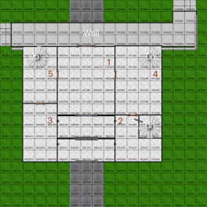
Gate House, Ground Level.¶
Scale: Square = 2m (6’).
Two-story entrance tunnel. (About 7m high.) There’s an outer door, an inner iron bar portcullis, and beyond that, an inner door.
Inside the tunnel, there are arrow slits on this level and the floor above to allow guards to shoot down from above.
Guard Room. One guard with crossbow and a few quarrels. They help raise and lower the portcullis. The south west guard room has a large space missing from it. There’s a concealed door (difficulty Moderate 15 to find; difficulty Moderate 12 to get it open) and a spiral stair going down.
Guard Room. One guard with crossbow and a few quarrels. They help raise and lower the portcullis.
Spiral Stair to the upper floor, room 1.
Spiral Stair to the upper floor, room 2.
Gate House Second Level¶
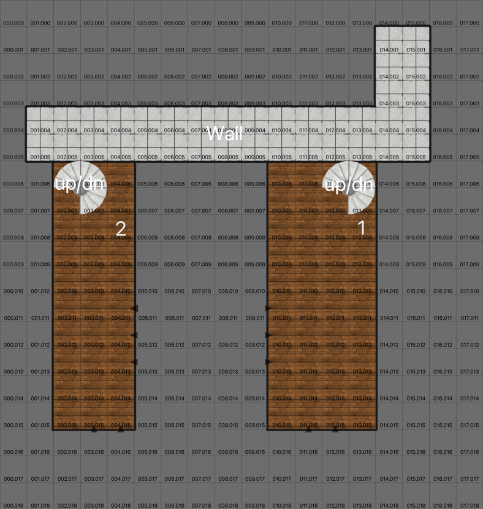
Gate House, Second Level.¶
Scale: Square = 2m (6’).
During the day, there may be 1D guards with crossbows. There’s a spiral stair up (to the roof) and down to room 5. At night, this is generally empty.
During the day, there may be 1D guards with crossbows. There’s a spiral stair up (to the roof) and down to room 4. At night, this is generally empty.
From the rooftop, there’s access to the wall.
Gate House First Sublevel¶
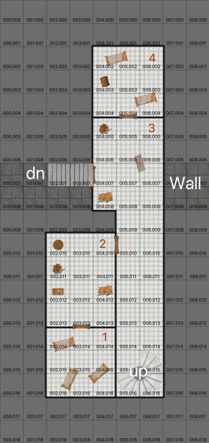
Gate House, First Sublevel¶
Scale: Square = 2m (6’).
Old Barracks. Once had accommodations for eight.
Old Supply. Rotted food and barrels of brackish water.
Old Office Area. Desks and chairs. A spiral stair leads up to the ground level, concealed by a hidden door.
Old Officer’s Barracks. Once had accommodations for two.
The array of cells are accessible to the Old Keep. Some cells have current prisoners. These will be merchants waylaid along the road who may have some use.
New Keep¶
This is the main operations center.
New Keep Ground Level¶

The New Keep, Ground Level¶
Scale: Square = 2m (6’).
Cloak Area, 6D gold, 20D silver, in various pockets and purses hanging in the various wardrobes.
Guard, looking out window, at desk.
Desk has daily and weekly schedules, as well as petty cash, a list of pilgrims, a list of prisoners, and a list of accomplices in various towns who are allowed entrance
Staffing Admin. Officer
Level 2-3. Human Resources. Complete personnel files for guards, clerics, accomplices, spies, etc.
See Staff Positions
20 Helms and 30 Shields
20 Pole Arms, 10 Short Swords, 10 Short Bows, 200 arrows
Finance Admin. Officer
Level 2-3. Finance and Bookkeeping. Complete general ledger, including bribes, etc., as well as supplies.
See Staff Positions
Comm. Officers 1 & 2
Code books. Notes to accomplices in various towns. Plan A, Plan B boxes of fixed message sequences for massive revolts.
Latrine
Internal Security Intelligence Mages.
Notes from crystal ball gazing, etc.
Guest room 1.
Miscellaneous visitors. 1D <= 3 chance of accomplice from some town. 4/6 chance of City of Eagles. 2/6 change of City of White Water.
Internal Security (Torture) Priests.
Transcripts from prisoners.
Guest room 2.
Miscellaneous visitors. 1D <= 3 chance of accomplice from some town. 4/6 chance of City of Eagles. 2/6 change of City of White Water.
Clerk, Finance.
Complete lists of weapons, armor, food, animals, furniture, religious items, magical items, etc.
See Staff Positions
Library, Files.
Maps, charts, note, books, etc. Spiral stair goes up and down
War Room. Large maps, charts, notes, books, etc.
Clerk, Training.
Off-duty plans for entire staff, pilgrims, clerics, etc. Weapons, magic.
See Staff Positions
Mess Hall.
Room for over 100 if they crowded the benches. Always 1D+2 off-duty types here. Less than half the tables in regular use.
Pantry 1. Meats
Pantry 2. Vegetables
Kitchens. Two cooks, two helpers, two scullery.
New Keep Second Level¶

The New Keep, Second Level¶
Scale: Square = 2m (6’).
Two guards with crossbows. Bored.
Two guards with swords, and a junior mage w/ Rod of Missiles. See ✪ on the map. Items are detailed below.
Barracks 1, 14 beds
Barracks 2, 24 beds
Barracks 3, three low-level officers
Large Hall, muster area
Rec Room
Empty during the day.
2D here during Dog Watch.
1D here during Night and Morning Watch. These are a mix of the sleep-deprived and the roaring drunks.
Officer’s Suite 1, bed room
Secret Room with spiral stair going up and down
General’s Apartment, living room. Richly appointed.
Sculpture, books, paintings, ancient harp worth 500 Gold Pieces.
Officer’s Suite 1, living room. Nicely appointed
General’s Apartment, study
In the chest, there are three pieces of equipment:
The Sword of the Survivor
The Helm of Bravery
The Power Shield
Officer’s Suite 2, bed room. 6D + 50 Gold.
General’s Apartment, bed room. 3D × 10 + 200 Gold.
Colonel’s Apartment, living room. Well appointed.
Officer’s Suite 2, living room. Nicely appointed
Colonel’s Apartment, bed room. 3D × 3 + 100 Gold.
Small incense censor and Bottled Wind artifact.
Colonel’s Apartment, study
Magic Book. Eight spells with an Air focus.
Fresh Air
- Skill:
- Difficulty:
5
- Effect:
18 (accelerated_healing (R2) Immediate help to the target)
- Range:
1 m (0)
- Speed:
(0)
- Duration:
1 sec (0)
- Casting Time:
1 round (4)
- Other Aspects:
incantation (4): Air Summoning (litany)
Gust
- Skill:
Attack with powerful blast of air
- Difficulty:
9
- Effect:
6 (Attack with powerful blast of air 2*D (physical damage))
- Range:
1 m (0)
- Speed:
(0)
- Duration:
1 sec (0)
- Casting Time:
1 round (4)
- Other Aspects:
area_effect (22): 20m length 4m base cone
incantation (4): Air Summoning (litany)
concentration (2): Concentration: 1 round (willpower/mettle roll 8)
Gale of Wind
- Skill:
Attack with a relentless blast
- Difficulty:
18
- Effect:
12 (Attack with a relentless blast 2*D (physical damage, ignores all armor))
- Range:
1 m (0)
- Speed:
(0)
- Duration:
1 sec (0)
- Casting Time:
1 round (4)
- Other Aspects:
area_effect (34): 20m length 8m base cone
incantation (4): Air Summoning (litany)
concentration (2): Concentration: 1 round (willpower/mettle roll 8)
Glide
- Skill:
- Difficulty:
12
- Effect:
27 (glider_wings (R3) can glide from a high place or lift off into a very strong wind)
- Range:
1 m (0)
- Speed:
(0)
- Duration:
2 round (5)
- Casting Time:
1 round (4)
- Other Aspects:
incantation (4): Air Summoning (litany)
The ‘wings’ are a hazy outline around the target of the spell; speed is typical movement, 10m per round
Cleansing Breeze
- Skill:
- Difficulty:
16
- Effect:
12 (environmental_resistance (R4) survive smoke or air-born poisons)
- Range:
1 m (0)
- Speed:
(0)
- Duration:
2 min (10)
- Casting Time:
1 round (4)
- Other Aspects:
area_effect (20): 4m radius sphere
incantation (4): Air Summoning (litany)
concentration (2): Concentration: 1 round (willpower/mettle roll 8)
There’s little sense of a breeze, but smoke and poison are much less harmful.
Sense Air
- Skill:
Acumen
- Difficulty:
13
- Effect:
18 (enhanced_sense (R2) feel movement)
- Range:
10 m (5)
- Speed:
(5)
- Duration:
2 min (10)
- Casting Time:
2 round (5)
- Other Aspects:
incantation (4): Air Summoning (litany)
concentration (4): Concentration: 2 min (willpower/mettle roll 10)
Body of Mist
- Skill:
Physique
- Difficulty:
13
- Effect:
30 (intangibility (R2))
- Range:
1 m (0)
- Speed:
(0)
- Duration:
4 min (12)
- Casting Time:
2 round (5)
- Other Aspects:
incantation (4): Air Summoning (litany)
concentration (4): Concentration: 2 min (willpower/mettle roll 10)
- Other Conditions:
(4): side_effect (R2) double damage from air-based enchantments
Tornado
- Skill:
Crushing blast of wind
- Difficulty:
24
- Effect:
36 (Crushing blast of wind 6*D (physical damage, ignores all armor))
- Range:
1 m (0)
- Speed:
(0)
- Duration:
1 sec (0)
- Casting Time:
3 round (6)
- Other Aspects:
area_effect (34): 20m length 8m base cone
incantation (4): Air Summoning (litany)
concentration (2): Concentration: 3 round (willpower/mettle roll 8)
feedback (10): lowered resistance
New Keep Third Level¶
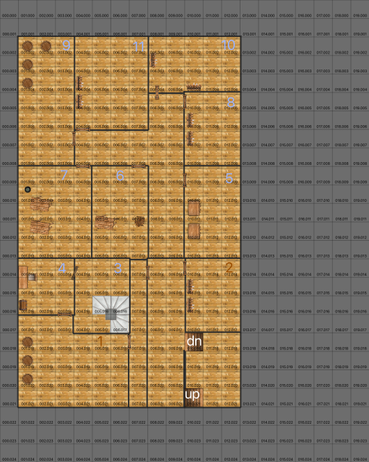
The New Keep, Third Level¶
Scale: Square = 2m (6’).
Bored General Stores guards
Rack of crossbows
Secret room with spiral stair going up and down
Old records of general stores
Hauberks and other armor
Junk
Junk
Helms
Lanterns, Torches, Candles, Tinder, Flint, etc.
Shields
Quarrels
New Keep Fourth Level¶
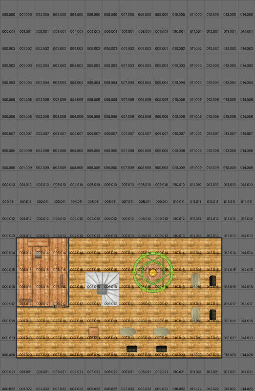
The New Keep, Fourth Level¶
Scale: Square = 2m (6’).
Spiral Stair.
Scrying devices used by the intelligence mages.
Crystal of Precognition
Linked Mirror
Cat’s Eye Ring
Cup of Visions
Of these, the crystal and the mirror work reliably.
The Ring and the Cup are locked in chests. The Mirror and the Crystal are brought out periodically. The Bandits keep the other mirror and check in periodically to show their status.
Officer in charge of intelligence devices. See Internal Intelligence, High Priest – Scrying. Cult of the Jackal.
New Keep First Sublevel¶
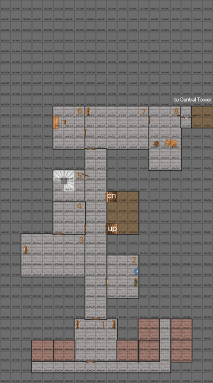
The New Keep, First Sublevel¶
Scale: Square = 2m (6’).
Four Prison Guards.
Latrine. A dribble of water weeps through the wall into a fountain and drains away through a crack in the floor.
Torture 1. Always one prisoner here
Ready for torture 1.
Spiral stair
Office for Internal Intelligence, High Priest – Torturer. See Cult of the Jackal.
Formerly a torture area, but rarely used. There’s a secret pass-through to the Central Tower now.
Torture supply area
New Keep Second Sublevel¶
See The UnderKeep.
New Keep Items¶
Rod of Missiles¶
A short, heavy rod with a stored attack.
- Effect:
9 (energy blast 2*D (ignore non magical armor))
- Other Aspects:
charges (4): 5 charges
- Other Conditions:
(1): burn_out (R1) can be lost or stolen
- Type:
Rod/Wand/Staff
- Price:
Helm of Bravery¶
- Effect:
9 (Intimidation 3*D)
- Other Conditions:
(1): burn_out (R1) can be lost or stolen
- Type:
Armor
- Price:
Power Shield¶
- Effect:
18 (Gain power: physical attacks 3*D; boost physique by amount of damage protection 3*D)
- Other Conditions:
(1): burn_out (R1) can be lost or stolen
- Type:
Armor
- Price:
Bottled Wind¶
It’s a large urn with straps so you can hold it
- Effect:
54 (flight (R3))
- Other Conditions:
(1): burn_out (R1) can be lost or stolen
- Type:
Artifact
- Price:
Forge Crystal¶
an irregular lump of amber-like material, it grants obscure, oracular views of a possible future
- Effect:
0 (extra_sense (R1) Precognition; flaw (R1) Vague visions)
- Other Conditions:
(1): burn_out (R1) can be lost or stolen
- Type:
Artifact
- Price:
Linked Mirrors¶
two identical mirrors; they can be viewed by a mage as one mirror in two places, and each mirror shows what’s visible to the other
- Effect:
0 (extra_sense (R2) Remote Sensing; flaw (R1) Can be hard to interpret)
- Other Conditions:
(1): burn_out (R1) can be lost or stolen
- Type:
Artifact
- Price:
Cat’s Eye Ring¶
a ring too large for a human, carved from a block of Chrysoberyl and polished to perfection
- Effect:
-9 (infravision_ultravision (R3) See in the dark; flaw (R1) Can be hard to interpret; flaw (R1) Too large to wear comfortably)
- Other Conditions:
(1): burn_out (R1) can be lost or stolen
- Type:
Artifact
- Price:
Cup of Visions¶
a cup made from fine clay white on the inside and dark on the outside. It’s supposed to be used to read tea leaves, that’s not something any of the mages in the Jackal Temple have every tried.
- Effect:
9 (Divination Read the tea-drinker’s past 3*D)
- Other Conditions:
(1): burn_out (R1) can be lost or stolen
(1): flaw (R1) Can be hard to interpret
- Type:
Artifact
- Price:
Sword of the Survivor: Agility 1D, Coordination 3D, Physique 1D, Intellect 1D, Acumen 3D, Charisma 3D. Disadvantages: Advantage Flaw (R3), Either Combat Sense or Attack Resistance, never both in the same round., Special Abilities: Combat Sense (R3), Great Attacking; Attack Resistance (R3), Great Blocking; Natural Hand-to-Hand Weapon (R3D), , Move: 10, Strength Damage: 1D, Fate Points: 1, Character Points: 5, Body Points: 24.
Central Tower¶
A very new, and imposingly huge building, it rises over 12m into the air, looming over the 8m-high walls.
Central Tower Ground Level¶
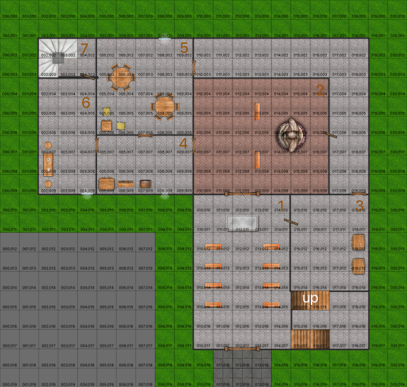
Central Tower, Ground Level¶
Scale: Square = 2m (6’).
Public chapel for ordinary observations.
Sacred Sanctum, open for three stories up to skylights. A Two-meter tall statue of Anubis (on a 1 m plinth) looms over the two benches. Only the most-favored are admitted here. Note the false door in the wooden panel behind the statue.
Priest’s area behind secret doors. Two wardrobes of miscellaneous religious trinkets for various seasons.
Vestments, and more serious religious items used in the Sanctum
Priests’ area to gather before and after religious observations.
Liturgical apparatus including two holy books with stories of the Jackal.
Secret spiral stairs going up and down.
Central Tower Second Level¶
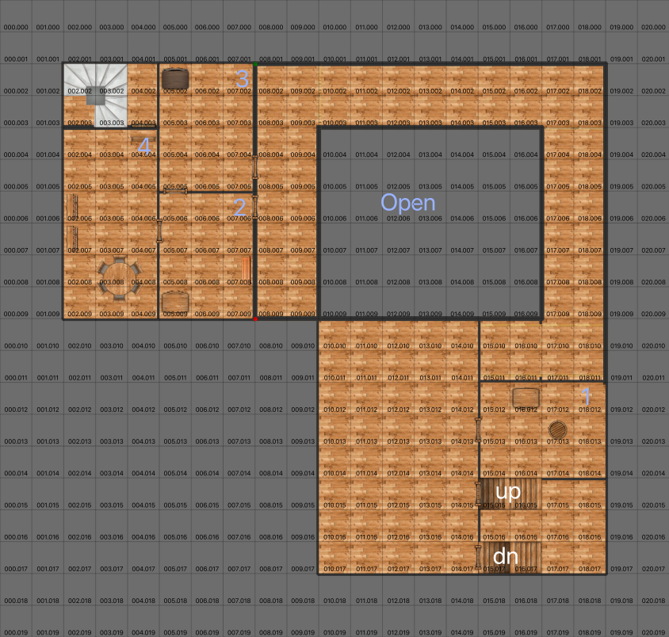
Central Tower, Second Level¶
Scale: Square = 2m (6’).
Closet, cleaning supplies
Choir
Musical Instruments, mostly drums
Music and storage
Spiral Stair going up and down
Central Tower Third Level¶
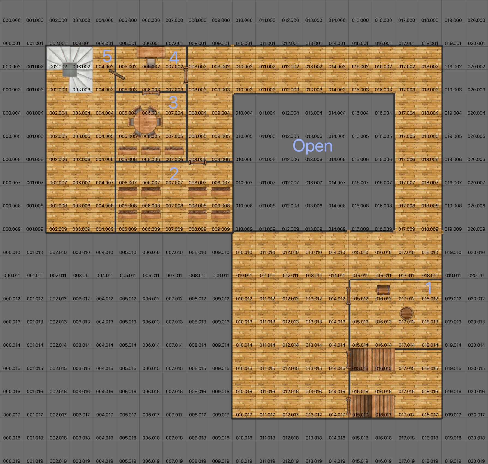
Central Tower, Third Level¶
Scale: Square = 2m (6’).
Closet, cleaning supplies
Library
Records of library and other religious things
Librarians
Spiral Stair going up and down
Central Tower Fourth Level¶
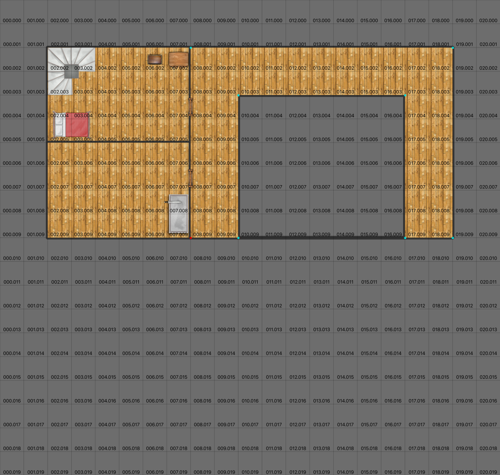
Central Tower, Fourth Level¶
Scale: Square = 2m (6’).
Xorn’s bedroom
Xorn’s human sacrifice area
The captured Squire Starter is here
Central Tower Fifth Level¶
Central Tower, Fifth Level¶
Scale: Square = 2m (6’).
Xorn’s study.
Books, scrolls, cups, pentacles, runes, potions, etc. The Lightning Rod is kept here!
Also, An investigation roll (difficulty Moderate) is required to find the map to the Salamander’s cave. There will be difficult to intepret books and pictures. They won’t make sense until Flush out the Jackal.
Central Tower First Sublevel¶
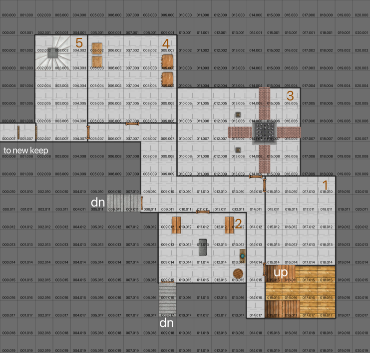
Central Tower, First Sublevel¶
Scale: Square = 2m (6’).
Empty
To the catacombs.
Tables etc. for resting the stretcher. Modern carvings.
Under the altar.
Mechanism to shift the statue above to expose the pit of spears under the arches holding up the floor above.
Catacombs tools (stretchers, shrouds, etc.)
Spiral Stair. Xorn’s private path.
Central Tower Second Sublevel¶
See The UnderKeep.
Old Keep¶
This tower is older than the gatehouse and the walls.
Old Keep Ground Level¶
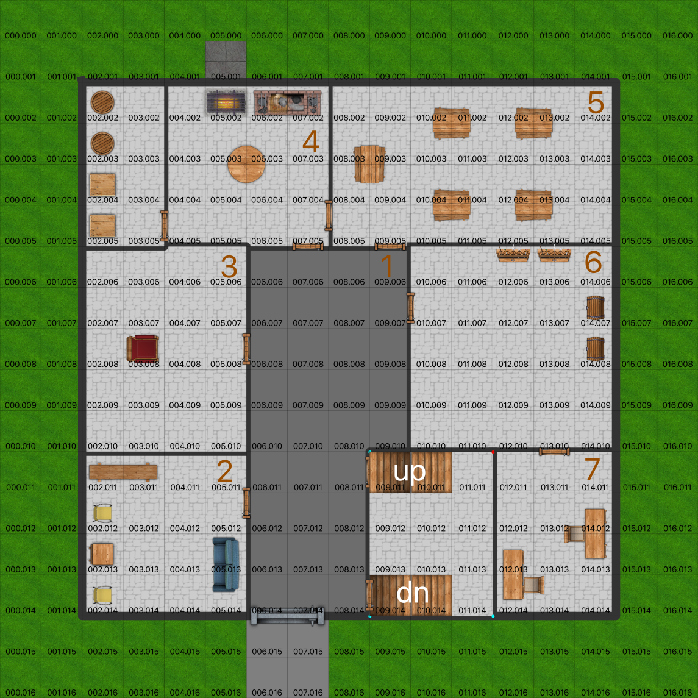
Old Keep, Ground Level¶
Scale: Square = 2m (6’).
Great Hall. 1D priests here. When court in progress will be 3D priests, plus 1D pilgrims, plus 1D guards.
When court not in progress (roll anything other than 2 on Activity Details table in General), 1D priests. All with “Priest” title.
“When court in progress (roll 2 on Activity Details table in General) will be 3D priests, plus 1D pilgrims, plus 1D guards”
See Characters.
Waiting Chamber. Desks, chairs, couches, etc.
Xorn’s Court Chamber. Xorn’s throne. Xorn, his general, several MU’s. 2D guards.
Kitchen (pantry to side) One Cook, two assistants. For priests who live here only.
Dining. Seating for 36.
Guard room. Extra equipment (4 helms, 4 shields, 1 x-bow, 2 spears.)
Officers. Two higher magic users, armed with wands:
Wand of Intention to detect enemies.
Wand of Submission to foil enemies.
Old Keep Second Level¶
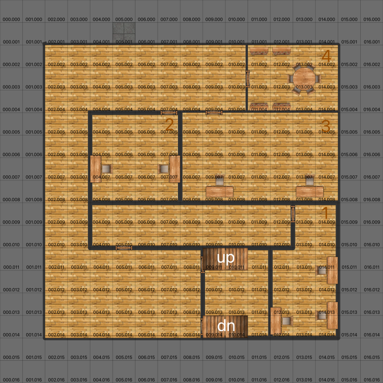
Old Keep, Second Level¶
Scale: Square = 2m (6’).
Novice Oversight. Three level 1 priests here.
Priest Care, Internal Security. Two level 2-3 priests here.
High Priest Convocation. Two level 4 priests may be here. Often, they’re elsewhere, either using the scrying devices or torturing prisoners.
Old Library. Most of the useful volumes are in the New Keep.
See Characters.
A large hall wraps around the S, W, and N side of the tower. This has numerous arrow slits, but, the weapons are all in the Gate House.
Old Keep Third Level¶
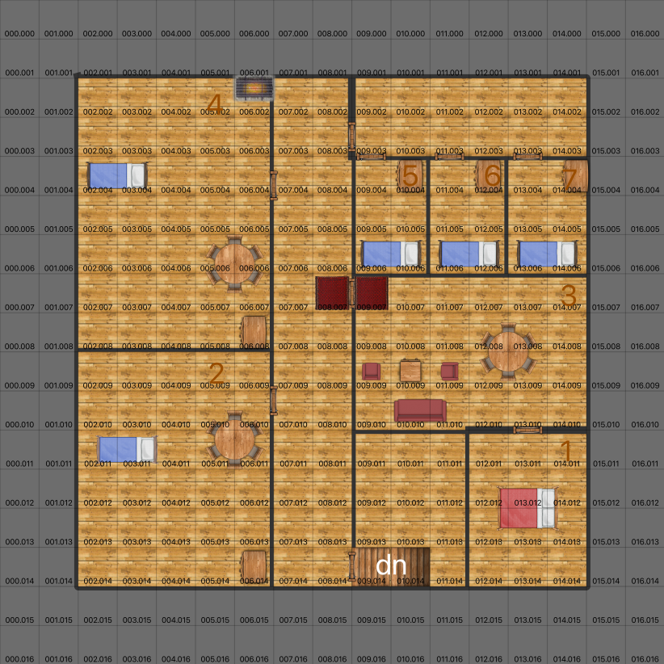
Old Keep, Third Level¶
Scale: Square = 2m (6’).
Xorn’s Official Bedroom. Richly appointed, but never used.
Senior Priest South. Responsible for Internal Security (Scrying and Torture). Only here at night.
Xorn’s Official Living Room. Richly appointed, but only used for state occasions.
Senior Priest North. Responsible for External Intelligence (Communications, Spies and Disinformation). Only here at night.
High Priest West residence. Responsible for Temple operations.
High Priest Center residence.
High Priest East residence.
Old Keep First Sublevel¶
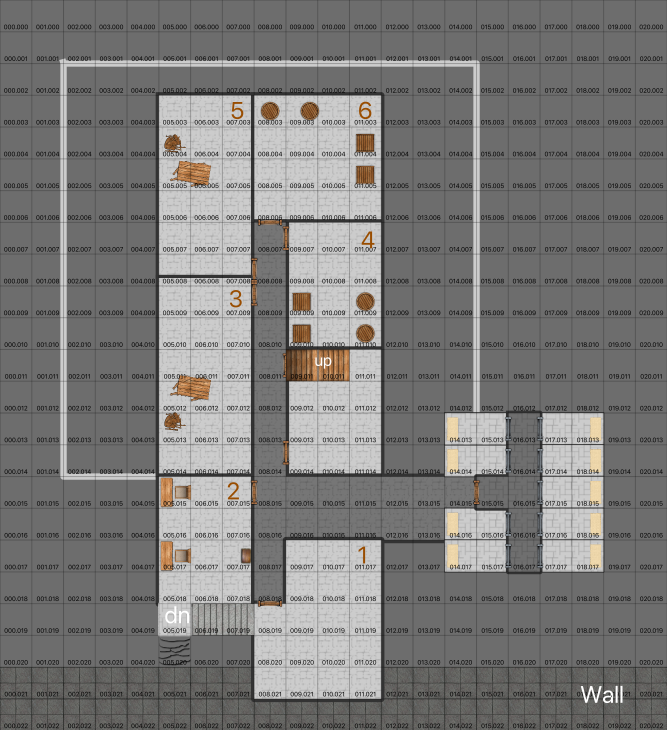
Old Keep, First Sublevel¶
Scale: Square = 2m (6’).
Empty. Essentially a wide hall.
Officers. Four guard officers. Level 1-3
Old Barracks 1. Room for 12 guards
Food Stores. Meats
Old Barracks 2. Room for 12 guards
Food Stores. Vegetables and wines
The hall connects to the Old Jail under the Gate House with an array of cells. See Gate House.
Old Keep Second Sublevel¶
See The UnderKeep.
Old Keep Items¶
Wand of Submission¶
- Effect:
15 (boost wielder’s intimidation/charisma forces them to submit 5*D)
- Other Aspects:
charges (4): 5 charges
- Other Conditions:
(1): burn_out (R1) can be lost or stolen
- Type:
Wand
- Price:
Wand of Intention¶
- Effect:
81 (Understanding an enemy: boost wielder’s acumen divine their intentions 3*D; possession_limited (R3) limited)
- Other Aspects:
charges (4): 5 charges
- Other Conditions:
(1): burn_out (R1) can be lost or stolen
- Type:
Wand
- Price:
Knife of Slaughter¶
The knife is awkwardly large, not really built for human hands
- Effect:
9 (2*D (ignore non magical armor))
- Other Conditions:
(1): burn_out (R1) can be lost or stolen
- Type:
Weapon
- Price:
Barn and Stable¶
Barn is to the west. This has a number of tools and silage for the animals. There are chickens in the yard, and the coops are in the barn. Horses can be crammed in here when a caravan arrives.
Stable is to the east, there are three horses for Xorn and Senior officers. Caravan horses are put in here when there’s a caravan.
E Lodge and W Lodge¶
When facing the front gate from the south, there are two lodges to the west of the gate. These lodges are outside the wall, leaving them essentially undefended.
Both of the lodges have the same floor plan. They both have room for 14 pilgrims and two servants.
The West Lodge is generally for more senior pilgrims. It may house some secret.
The East Lodge is for merchants and new pilgrims.
GM Note
The basements of the two lodges differ slightly.
Lodge Ground Level¶
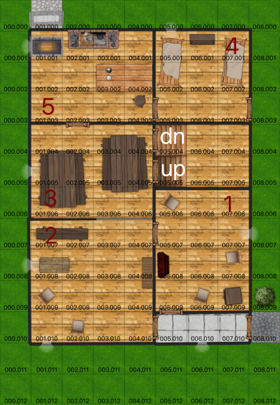
E and W Lodges, Ground Level¶
Scale: Square = 2m (6’).
Study/Drawing Room. Several books and pilgrims.
Living Room. Couches, chairs, tables, etc.
Dining Room. Seats 14
Servant’s Quarters. Cook and maid
Kitchen
Lodge Second Level¶
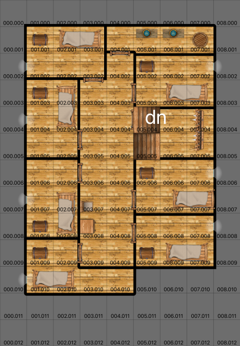
E and W Lodges, Second Level¶
Scale: Square = 2m (6’).
Top Right (4.1 to 7.1) is a lavatory – some wash basins and a cask of water
The remaining rooms are Bedrooms with two Pilgrims each.
The landing in the staircase (7.4 and 7.5) have weapons racks.
Lodge First Sublevel¶
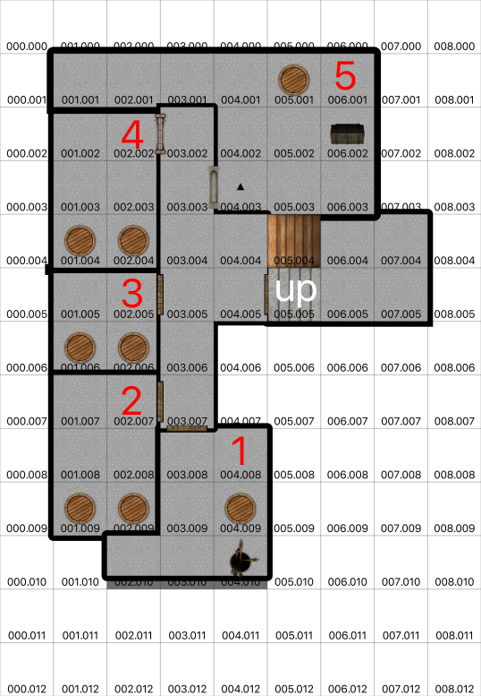
E and W Lodges, Cellar¶
Scale: Square = 2m (6’).
Abandoned Store Room
Barrel of something rotten.
Barrel with old spears. Still useful, but a bit too long for indoor use.
Meats in casks
Vegetables
Wines
Hidden Store Room (West Lodge only, this room isn’t present under the East Lodge.)
There’s a hidden door is between 3.3 and 4.3. There’s a trap behind the door, in 3.3, annotated with ▲. This trap is not concealed, difficulty Easy 10 to make sure most folks will find it and trigger it. This is a knife that will be thrust out when one of the stones covering the door is moved. It does 1D damage, difficulty Difficult 16 to disable it. This was designed to stop the curious from poking around; it’s particularly bad for those who listen at the wall without checking and get stabbed in the head.
(Note that wheels and springs aren’t part of this world. This is moved by a falling weight and clever wire rope to apply leverage to force the knife out.)
The actual release for the concealed door is over the lintel. Difficulty Moderate 15 to find this.
In the room there’s a large chest has a rusty lock difficulty Moderate 13 to open. The chest is built of heavy wood, wrapped in metal bands, and will withstand 3D of damage. Contents:
250 gold coins,
Two rusty swords,
Some rotten old clothes that have seen better days,
A surprisingly new-looking shield, likely magical (see West Lodge Items),
A short sword that seems like it’s eager to be picked up (see West Lodge Items).
Plus, the bottom is false. There’s a 5cm gap under the thin layer of wood. In this gap are the following:
Four pieces of well-made jewelry, each worth 4D gold. These have no magical features.
A ring that pulses with energy (see West Lodge Items).
West Lodge Items¶
Shield of Strength¶
An older-style round shield with a surprisingly shiny boss in the center; it always looks brand-new.
- Effect:
12 (attack_resistance (R2) Physical and Extranormal)
- Other Conditions:
(1): burn_out (R1) can be lost or stolen
- Type:
Shield
- Price:
Ring of Fire Protection¶
- Effect:
30 (defend from fire: attack_resistance (R2) fire-based attacks; environmental_resistance (R2) heat; atmospheric_tolerance (R2) smoke)
- Type:
Ring
- Price:
Sword of Piercing: Agility 3D, Coordination 3D, Physique 1D, Intellect 1D, Acumen 3D, Charisma 1D. Special Abilities: Natural Hand-to-Hand Weapon (R2D), ; Armor-Defeating Attack (R1), negates 1D of armor, Move: 10, Strength Damage: 1D, Fate Points: 1, Character Points: 5, Body Points: 23.
The Underkeep¶
Before the Gatehouse and Walls (which are old) there was the Old Keep. Before the Old Keep, there was something else here, which was buried and forgotten, rebuilt, torn down, buried and forgotten a second time.
There are two distinct parts to the Underkeep, the Old portion is mostly under the the current locations of the Old Keep and Gate House. The New portion is mostly under the Central Tower. The terms old and new are relative to each other, of course; all of the surface construction is newer than the new portion of the Underkeep.
Careful study (difficulty Moderate 15, with access to the Old portion of the underkeep) can reveal the Old Keep was built from rubble of an even older construction that once stood here. Further, the part underlying the Old Keep is relatively small, with only 5 distinct rooms.
To the west, under the Central Tower is a distinct Underkeep. This is newer, and far more confusing.
There’s a connection between them: a hidden door between 40.2 and 40.3. The design of the catch that holds the door closed is awkwardly high, and requires a great deal of leverage to operate. The difficulty Moderate 14 to find the hidden recess. Operating the catch is a difficulty Difficult 16. Taking time to study it, and improvising some tools will reduce this to a more a 12.
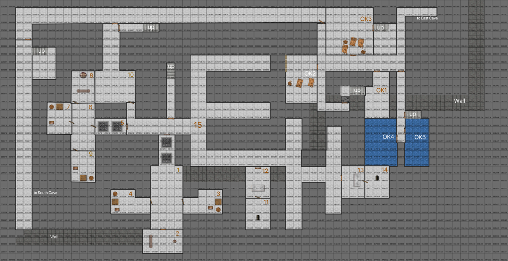
Underkeep, two levels below ground.¶
Scale: Square = 2m (6’).
The Old Underkeep¶
The oldest portion of the Underkeep lies under the Old Keep and the Gate House.
The Old Underkeep connects the East Cave to the Old Keep and the Gate House. Going back and forth to the cave is done by following this hall. Someone makes the trip every few days, so the hall is clearly used. Bits of useless junk, like broken belts or weapons hafts can be found, kicked into corners and forgotten. Many feet pass here, but no one cleans up.
The tumble of rocks at 43.12 leads up to the Old Keep. From 54.1, it’s still 90m to the cave. (10m to a spot under the wall, 80m to the cave level 3.)
The “T” intersection at 40.7 and 40.8 is marked by chalk arrows on the wall at 40.7 pointing S.
No one in their right mind uses the stairs under the Gate House. The area around the cisterns in OK4 and OK5 is death.
- OK1:
Used to be part of path to catacombs. Ancient carvings, perhaps not even human. There is no Anubis image here.
It may show priests preparing themselves, but, the deity has been chiseled off the wall. The priests don’t have quite the right size ratios to be human. Either the carvings have provided animal features on people, or these aren’t human.
- OK2:
Perhaps part of the path to the catacombs. The reinforced brick wall in the NW corner was added, but it’s solid, and predates the Old Keep. Careful study (difficulty Moderate 15) can show the style of masonry matches some features of the New Underkeep.
- OK3:
Used to have funerary supplies. Mostly rotted dusty junk. Some is very old, and crumbles when touched. Other bits are newer. Searching will uncover a dagger which has withstood the ravages of time. This is the Knife of Slaughter. See Old Keep Items.
There’s a carving of something that might be a dragon or a giant fire-related salamander.
- OK4:
Old Cistern. Still has water 3-5m deep. Murky from a surface feed that’s still weeping ground water and insect life into cistern.
- OK5:
Other Old Cistern. Water 2-3m deep. Inhabited by hideous white cave snakes with bulbous non-functional eye bulges. Numerous weeping cracks in the walls allow water to flow into and out of this sump.
Watersnake: Agility 2D, Coordination 2D, Physique 1D, stamina 1D, swimming 3D, Intellect 1D, Acumen 3D, search 1D, survival 1D, Charisma 1D, intimidation 2D. Disadvantages: Achilles’ Heel (R3), Vulnerability to Fire, takes double damage, Special Abilities: Enhanced Sense (R3), Hearing; +1D for all search; Natural Hand-to-Hand Weapon (R3), Sleep venom in fangs: 3D stun-only damage, Move: 10, Strength Damage: 1D, Fate Points: 1, Character Points: 5, Body Points: 22, Natural Abilities: Swimming.
The New Underkeep¶
The newer portion of the Underkeep lies under the Central Tower and the West Lodge. This has some frescoes and bas-relief carvings that show two variants on Anubis. One Anubis appears male, the other has multiple teats suckling young.
King’s Crypt Hall.
1st T is a pit with spears under a sketchy floor plate. (Difficulty Moderate 11 to discover the plate. Difficulty Moderate 14 to wedge so people can cross it.)
2nd T is a surprisingly noxious gas, 3*D damage, ignores all armor. (Difficulty Moderate 13 to discover this is a binary chemical potion. Difficulty Easy 10 to shatter the concealed jug with the liquid component. Difficulty Moderate 12 to retrieve the basket with the solid component.)
King’s Crypt, Shrine
King’s Crypt, Treasure
Ancient, crumbling goods. Much jade and scrimshaw in bad condition.
King’s Crypt, Funerary goods
Queen’s crypt entrance.
1st T is Axe-on-a-spring, swiping horizontally. (Difficulty Moderate 11 to discover the plate. Difficulty Moderate 14 to deduce what’s going to happen and avoid it when setting it off the first time.)
2nd T is a pit with spears under a sketchy floor plate. (Difficulty Moderate 11 to discover the plate. Difficulty Moderate 14 to wedge so people can cross it.)
Queen’s Crypt Hall
Queen’s Crypt, Funerary goods
Queen’s Crypt, Shrine
Queen’s Crypt, Treasure
Ancient, crumbling goods. Much jade and some scrimshaw in bad condition.
Old entrance to catacombs
New stairs up to Central Tower have been added. The long hall to the North is new. Following the North hall to the West and then South, there are stairs up the the New Keep. Rarely used.
Crypt 2, treasure
Ancient, crumbling goods. Much jade and scrimshaw in bad condition.
Crypt 2, shrine
Crypt 3, shrine
Crypt 3, treasure
Ancient, crumbling goods. Much jade and scrimshaw in bad condition.
Niches, newly filled at the northern-most branch, oldest at south, near 9, 10, 11, 12.
East Cave¶
About 100m east of the tower in the Northeast corner of the keep, and about 40m north of the tower, there’s a boulder-strewn gulley. This conceals the East Cave. The spoor of raiding Goblins is often cleaned away; it’s difficulty of Moderate 15 to notice the traces.
About 40S of the cave is a pile of rocks that sometimes emits smoke (difficulty Difficult 16) to see this. The big meal is shortly after dawn, where there’s a faint whiff of burned meat (difficulty Difficult 16).
Level -1¶
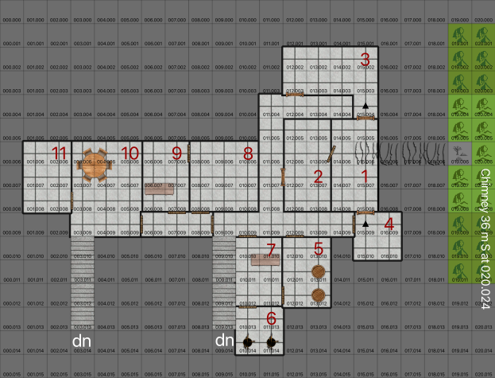
East Cave, First Sublevel¶
Scale: Square = 2m (6’).
Large pile of rocks conceals the entrance to the caves. Difficulty Moderate 15 to track Goblin spoor to the proper boulder. The pile of rocks descends about 10m into a finished room carved from the underlying rock.
Entrance Room.
North ▲ between 15.5 and 15.4 is spear release. 3D damage if you mess with the fake door. Difficulty Moderate 14 to discover and prevent it from stabbing you.
South ▲ in 15.8 and 15.9 is section of wall which collapses. 3D damage if you mess with the fake door. Difficulty Moderate 14 to discover and prevent it from crushing you.
Real door is “hidden”, barely 2m from where the steps to the surface end. Difficulty Moderate 12 to find it.
Guard area. 2D goblins at most. May be empty during a night raid.
Spear trap gizmo for the trap between 15.5 and 15.4. Spare parts, extra spears, grease for the weights and pivots.
(Note that wheels and springs aren’t part of this world. The spears are pushed out by a goblin mechanism from another realm that involves incomprehensible springs and gears.)
Collapsing wall trap gizmo for trap between 15.8 and 15.9, mashed in behind the door. Fasteners which support the delicately balanced wall, plus tools for reassembling the wall.
Storage of goblin shields and helmets.
Storage of goblin darts and swords.
Supply officer making sure every stays away from the weapons and armor. Two goblins here.
Conference room. 3D goblins here prior to and after the nightly raids. Conference lasts 1/2 hour, and involves much shouting and beating.
Raid officer. This is where orders are stored for each raid. Two goblins here.
Two goblin guards stuck here until their shift ends. Arguing or gambling.
Jail cell for anyone captured. Weak bar on the door, and an inattentive guard.
Level -2¶
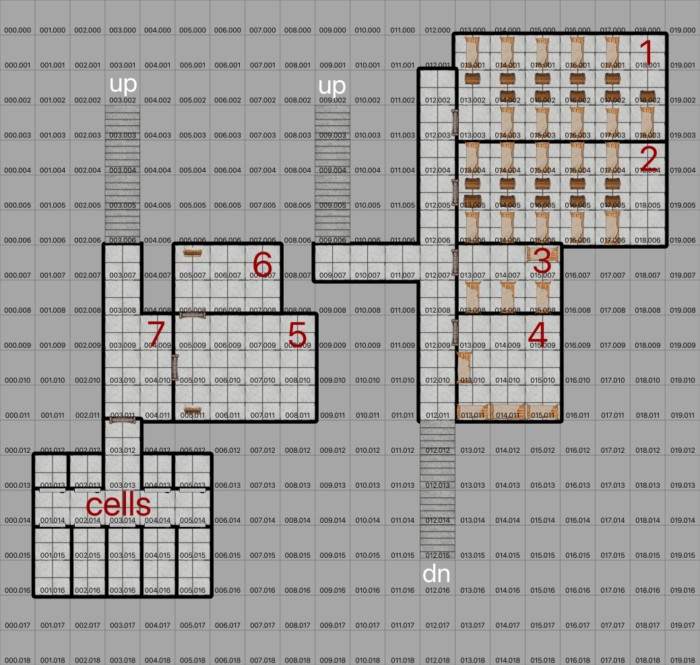
East Cave, Second Sublevel¶
Scale: Square = 2m (6’).
Twenty 3rd-4th watch goblins sleep here when not on raids. Chests are clothes and armor. There are 5D gold and 10D silver coins hidden in various places.
Twenty 5th-6th watch goblins sleep here when not on raids. Chests are clothes and armor. There are 5D gold and 10D silver coins hidden in various places.
Four junior officers sleep here. Chests are clothes and armor. There are 2 × 5D gold and 4 × 5D silver coins hidden in various places.
Four senior officers sleep here. Chests are clothes and armor. There are 3 × 5D gold and 5 × 5D silver coins hidden in various places. These offices know the truth: they’re unable to return to their realm.
Torture area. Disgusting torture instruments.
Another torture area. More disgusting torture instruments.
Two guards who don’t seem to care. The cells aren’t well made.
Level -3¶
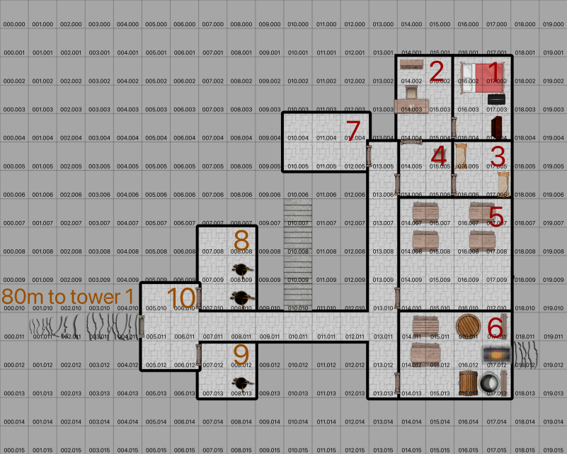
East Cave, Third Sublevel¶
Scale: Square = 2m (6’).
Goblin Great Leader’s bedroom. 1D females here. 200 GS. Three weird goblin jewelry per female. Sometimes called a Duke or a King. No one really knows how social ranking works for them.
Goblin Leader’s Study. The open book is incomprehensible goblin scratching. One of the other books is a kind of dictionary from the older language spoken by the Outlanders and Goblin.
With appropriate language skills (difficulty Moderate 12) one can find what appears to be an enchantment to close the veil.
With deeper language skills (difficulty Moderate 15) one can find the enchantment to open the veil, but it appears oddly incomplete.
Goblin Leader’s Servants/Guards. Four goblins.
Goblin Leader’s court and throne.
Rec area 1. 1D goblins here, gaming.
Mess area. 2D goblins here, eating. Kitchen against E wall.
Rec area 2. 1D goblins here, drinking.
Junk. Shovels, picks, brooms, buckets, torches, chain, rope, etc.
More Junk. Shelves, cabinets, bed frames, etc.
Two goblin guards here to act as messengers.
South Cave¶
About 80m from the tower in the Southwest corner of the keep, on the sloping side of a boulder-strewn hillside, there’s the carefully hidden South Cave.
The spoor of raiding Goblins is often cleaned away; it’s difficulty Moderate 15 to notice the traces.
Level -1¶
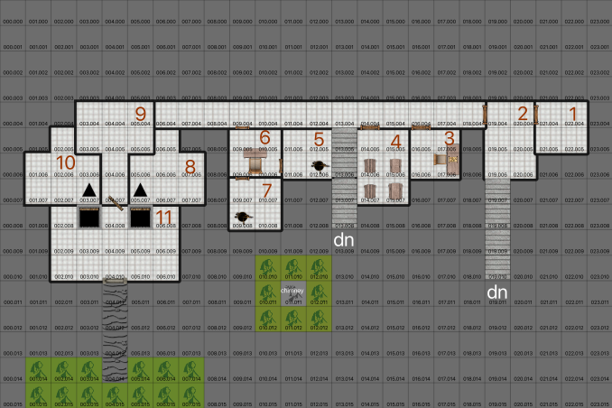
South Cave, First Sublevel¶
Scale: Square = 2m (6’).
Large pile of rocks conceals entrance to caves
Temporary cell for captured. It’s poorly made and there’s no guard.
Two Guards who don’t much care what’s going on. They gamble and fight among themselves.
Raid Senior Officer. Orders and maps. Two goblins.
Conference room. 3D goblins here 1/2 hr. prior to and 1/2 after a raid.
Goblin shields and helmets
Supply Junior Officer
Goblin spears and darts
Falling wall gizmo. Wall support parts and tools.
Two guards
Spear gizmo. Spare spears.
Entrance Room.
East Pit at 3.8 has snakes. There are 1D snakes, each does 1D bite with a difficulty Moderate 12 to poison. Difficulty Moderate 13 to find and avoid falling into it.
East ▲ between 3.8 and 3.7 is spear release. 3D damage if you mess with the fake door. Difficulty Moderate 14 to discover and prevent it from stabbing you.
West Pit at 5.8 has spikes in the bottom, doing 2D ignoring all armor. Difficulty Moderate 13 to find and avoid falling into it.
West ▲ between 5.7 and 5.7 is section of wall which collapses. 3D damage if you mess with the fake door. Difficulty Moderate 14 to discover and prevent it from crushing you.
Level -2¶
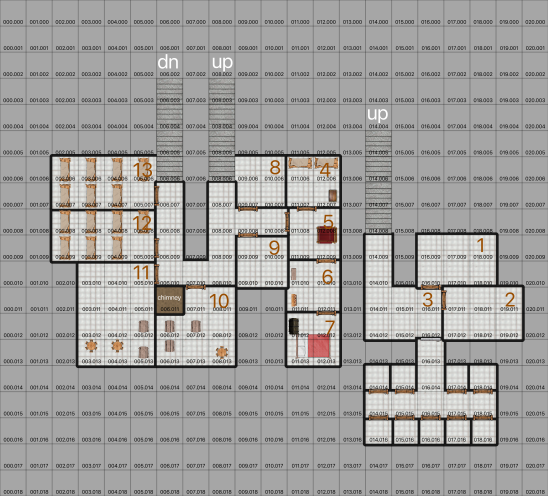
South Cave, Second Sublevel¶
Scale: Square = 2m (6’).
Torture area 2
Torture area 1
Two guards with nothing to do,
Great Leader’s guards and servants
Great Leader’s throne room
Great Leader’s study
Great Leader’s bed room. 1D females here. 200 GS. Three pieces of weird goblin Jewelry.
Four officers. 3-4 watch
Four officers. 5-6 watch
Rec area 1. 2D goblins gaming
Rec area 2. 2D goblins gaming
Sleeping area. 20 3-4 watch goblins
Sleeping area. 20 5-6 watch goblins
Level -3¶
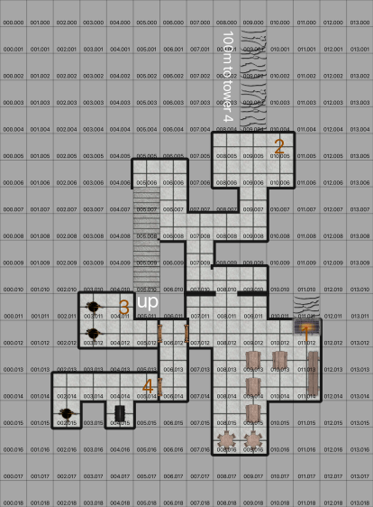
South Cave, Third Sublevel¶
Scale: Square = 2m (6’).
Mess area. Kitchen against N wall
Two messengers.
Tools. Shovels, picks, brooms, buckets, torches, chain, rope, etc.
Junk. Shelves, cabinets, bed frames, etc.